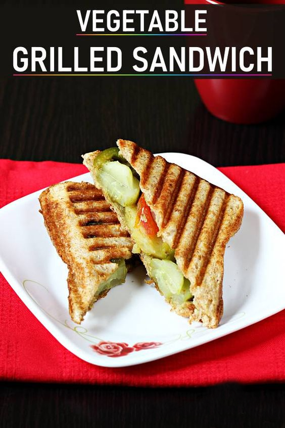

Veg Grilled Sandwich

A finished delicious veg grilled sandwich.
These veg grilled sandwich can be made for breakfast, brunch or a snack
and are quite filling. These can also be carried to work as they keep
good for a few hours.
Ingredients
- Potatoes
- Beets
- Tomatoes
- Onions
- Cucumber
- Bell Peppers
- Green Chutney(Or use Tomato Sauce or Mayo)
- Butter
- Sandwich or Chaat Masala
- Bread
- Griller or Stove
Preparation
-
Making green chutney (optional) - To a blender jar, add coriander leaves, fried gram, cumin,
green chilies, garlic cloves, ginger, lemon juice and salt. Blend well adding water little by little to
make a thick chutney.
-
Do not add too much water otherwise the chutney will turn runny. Taste the chutney and add
more salt & chili if needed.
-
Prepare veggies - Peel the potatoes & steam them in a steamer or cooker until just cooked or
fork tender. Do not make them very soft or mushy.
-
Slice the remaining veggies cucumber, onions, tomatoes along with boiled and cooled potatoes.
Making The Grilled Sandwich
Butter each slice of bread on both the sides. Spread the green chutney as needed.
Place the veggies - potatoes, tomatoes, cucumber, onions and then capsicum. Sprinkle a
generous amount of chaat masala. Cover with another slice of buttered bread.
Place them in a hand held or electric griller and grill the sandwiches until golden. You can also
grill them on a grill pan until golden & crisp.
Cut veg grilled sandwich to halves and serve.